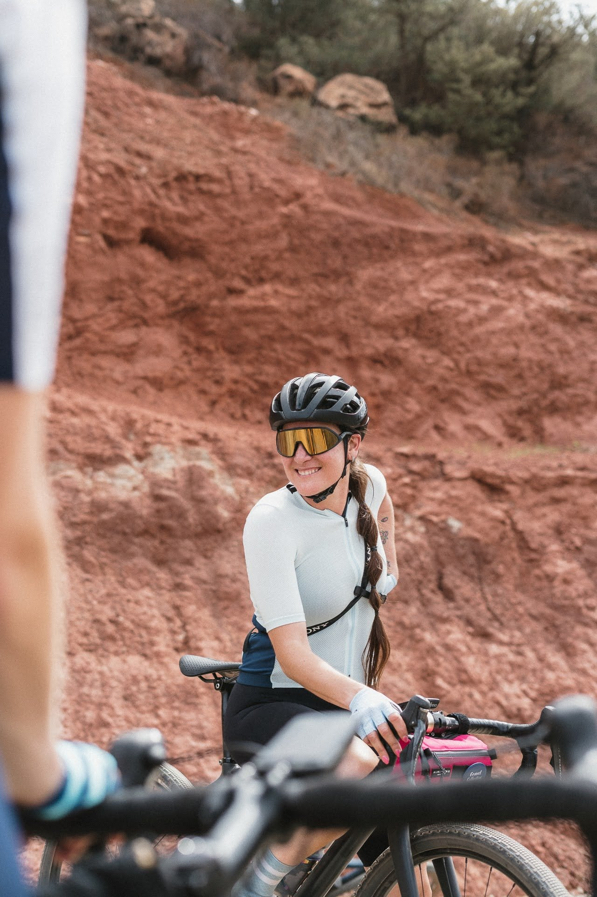

(1550 x 150 px).png)
About
Everything Vancouver Cycling
Vancouver Cycling Collective directories started with a simple observation - There is so much happening in Vancouver for cyclists of all ability levels, but there wasn't a central place to find events, races, routes, retailers and more. To make matters more complex, a lot of the information was posted on social media, leaving out those who choose to stay off these platforms, do not follow the 'right' accounts or do not spend much time active on social media.
My solution was creating a central hub for everything cycling and multisport in Vancouver.

Noa Deutsch
Hi 👋, my name is Noa.
I have been in the cycling world since 1993, racing bikes from age 12. I have been a part of the cycling industry for the last ~20 years, working as a bike fitter, coach and sports nutritionist. I have been immersed in the Vancouver cycling scene since moving here in 2013.
Nice to meet you!

Stay Updated
Get updates on new routes, events, and other Vancouver cycling + multisport news